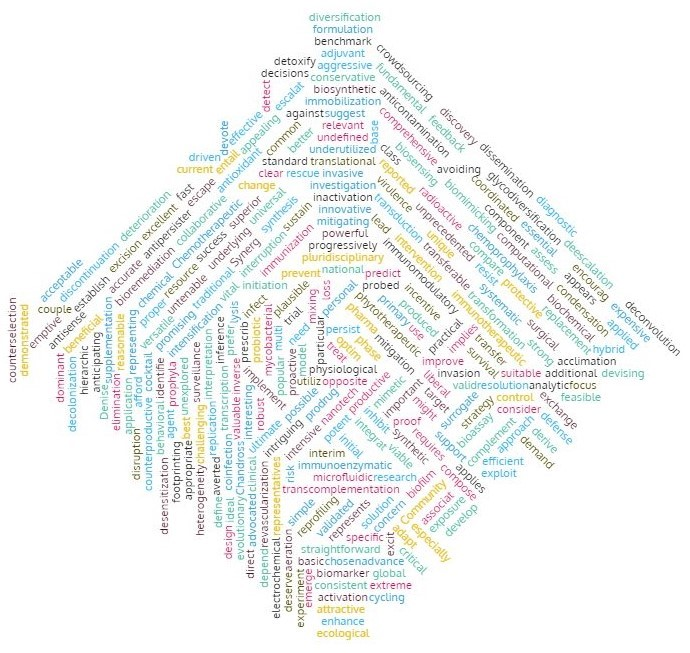

|
Antimicrobial resistance or drug resistance is a global public health concern that is increasing day by day. Researchers around the world are working on strategies to overcome this problem. This often end up in discovering novel lead molecule, drug target or any new therapeutic strategies. However, these data are unevenly distributed, and therefore difficult to access all the required information at a time. The goal of this project is to extract these data and classify into categories to make it user friendly and readily accessible. |

|